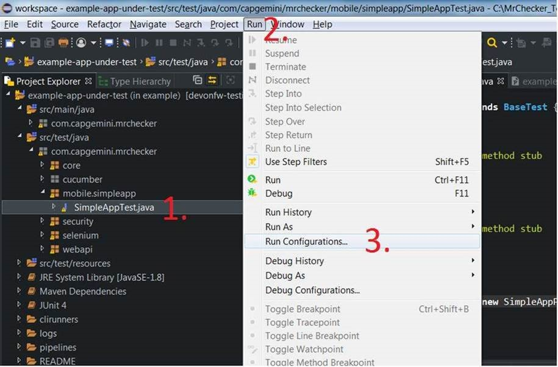
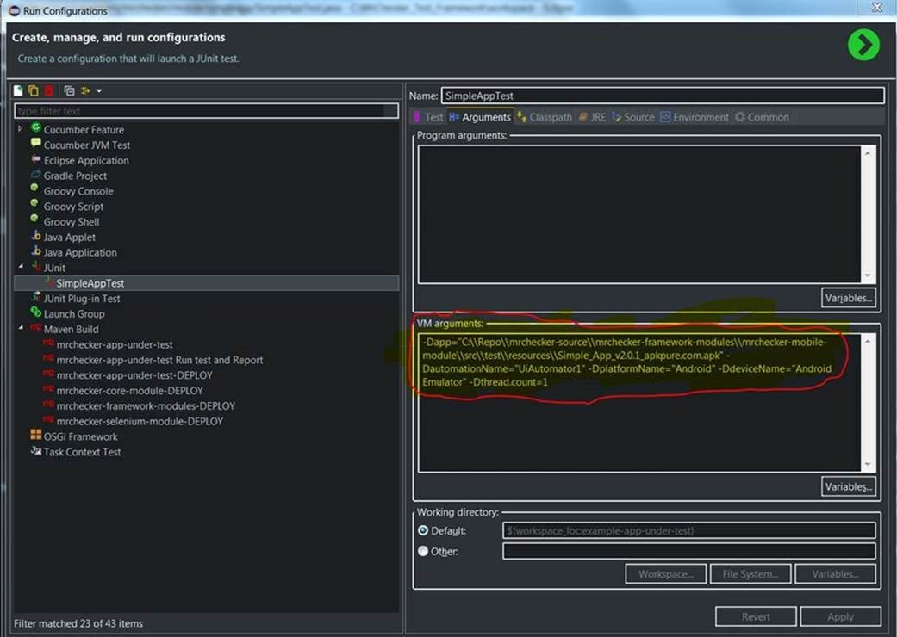

Table of Contents
How to use mobile test Module
-
Install IDE with MrChecker
-
Switch branch to 'feature/Create-mobile-module-#213' - by default it is 'develop'
git checkout feature/Create-mobile-module-#213
-
Install and setup git checkout feature/Create-mobile-module-#213[Appium Server]
-
Connect to local Device by Appium Server
1. Install Android SDK https://developer.android.com/studio/index.html#command-tools -> 2. Download Platform and Build-Tools (Android versions - > https://en.wikipedia.org/wiki/Android_version_history ) * sdkmanager "platform-tools" "platforms;android-19" * sdkmanager "build-tools;19.0.0" * copy from /build-tools file "aapt.exe" to /platform-tools 3. Set Environment: ANDROID_SDK_ROOT = D:\sdk-tools-windows-4333796 PATH = %PATH%; %ANDROID_SDK_ROOT% 4. Start Appium Server 5. Start Session in Appium Server, capabilities { "platformName": "Android", "deviceName": "Android Emulator", "app": "D:\\Repo\\mrchecker-source\\mrchecker-framework-modules\\mrchecker-mobile-module\\src\\test\\resources\\Simple App_v2.0.1_apkpure.com.apk", "automationName": "UiAutomator1" } -
Run Mobile tests with runtime parameters. List of supported parameters could be found here
-
From command line (as in Jenkins):
-
mvn clean compile test -Dapp=".\\Simple_App_v2.0.1_apkpure.com.apk" -DautomationName="UiAutomator1" -Dthread.count=1
-
from IDE:

